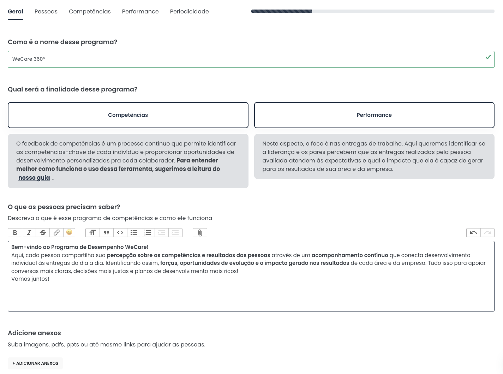
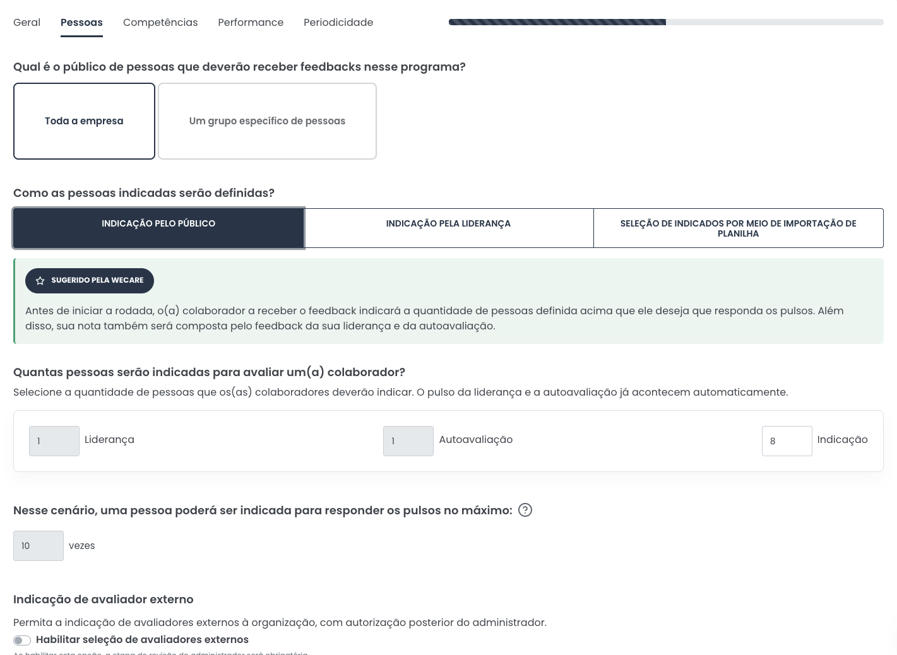
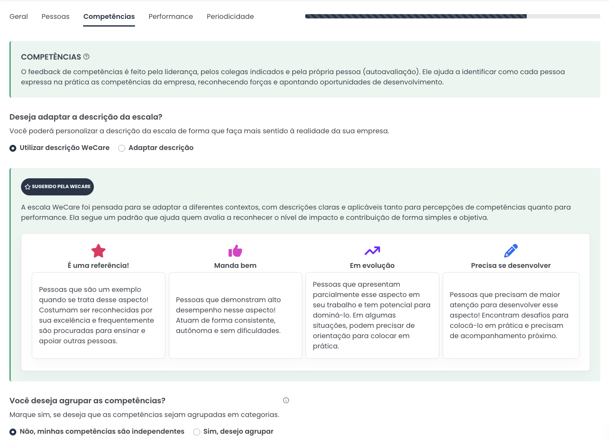
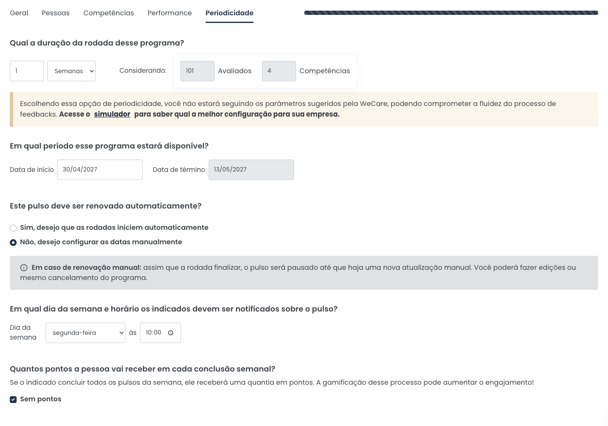

Como funciona o programa de ponta a ponta, do setup à visão do colaborador, com tutoriais, perguntas frequentes e links úteis reunidos em um só lugar.
A parceria entre Crescimentum e WeCare une a expertise em desenvolvimento humano à tecnologia que potencializa resultados. Este é o passo a passo para trilharmos esse caminho com fluidez e excelência, desde o primeiro contato até o go-live.
Já no primeiro contato, é importante ter em mãos o processo de segurança da informação e de análise de fornecedores do cliente. Levantar isso cedo evita bloqueios de última hora e protege o cronograma combinado.
O contato inicial com o time WeCare deve ocorrer com no mínimo 15 dias de antecedência da data prevista para o início da aplicação. Esse prazo garante que o cronograma seja cumprido sem percalços, com tempo hábil para parametrizações, testes e ajustes finos antes do lançamento.
Para dar vida ao projeto, reunimos as informações essenciais: quem é o cliente, um breve resumo do objetivo do projeto, o formato da avaliação (autoavaliação, avaliação de liderança ou 360º), o número de pessoas avaliadas, quem será o gestor do projeto, a data de início prevista, a previsão de reaplicações e qual será o canal oficial de contato durante o acompanhamento.
Após o envio do briefing, o time WeCare sugere horários para a reunião de KO. É o momento de alinhamento estratégico: o time é apresentado, as equipes revisam os dados compartilhados, detalham o escopo do projeto, definem os fluxos de comunicação e esclarecem dúvidas críticas para a operação.
O alinhamento técnico entre o time WeCare e a área de TI/SI da empresa contratante é um dos passos mais importantes do pré-projeto. Mesmo tratando-se apenas de dados básicos dos colaboradores, como nome e e-mail, a validação da plataforma e a análise de documentação técnica costumam seguir normas de segurança padrão das organizações.
Antecipar este passo evita bloqueios de e-mails, restrições de rede ou adiamentos por questões de compliance. É fundamental prever pelo menos uma semana para que a análise de segurança do cliente seja concluída, mantendo o cronograma estabelecido.
Caso o time do projeto ainda não tenha total domínio das funcionalidades, pode ser agendada uma reunião de demonstração da plataforma, para garantir clareza no uso e na navegação do sistema.
Com o briefing em mãos, o time WeCare configura o programa na plataforma seguindo a etapa de setup abaixo. O checklist completo de informações necessárias está logo a seguir, organizado nas mesmas categorias do setup.
Após a configuração completa no ambiente de teste ou produção, é feito um alinhamento final para conferência de dados e última chamada para alterações. Esse checklist é a garantia de um início sem erros.
Com todas as etapas anteriores validadas, o projeto é iniciado oficialmente, garantindo uma jornada segura, como previsto e definido inicialmente. Manter esses passos atualizados e uma comunicação fluida garante o sucesso do projeto e um bom resultado final.
Estas são as informações que precisamos receber para configurar o programa. Elas seguem as mesmas categorias detalhadas na etapa de setup logo abaixo.
Informações entregues para a WeCare, que realiza a operação com acompanhamento e aprovação da Crescimentum.
A primeira etapa do setup define as configurações gerais do programa: nome, finalidade, orientações que os participantes precisam conhecer antes de iniciar e a personalização da experiência, incluindo banners e identidade visual.
Ao final, são definidas as regras dos comentários: se poderão ser enviados de forma anônima ou identificada, e se o preenchimento será obrigatório ou opcional.

Geral
PessoasAqui são definidos os avaliados e a forma de seleção dos avaliadores: por indicação dos próprios participantes, indicação da liderança ou importação de planilha pelo RH.
Em seguida, configuram-se as diretrizes de participação: inclusão de avaliadores externos, aprovação das indicações por liderança ou RH e o tempo mínimo de admissão para participar, entre outras regras.
Nesta etapa define-se a estrutura da avaliação. É possível usar a escala padrão da WeCare ou personalizar o nome e a descrição da escala de 4 pontos conforme a realidade da organização.
As competências podem ser cadastradas de forma independente ou agrupadas por categorias. Para cada uma, define-se nome, breve descrição e, se desejado, uma descrição personalizada da escala.
Padrão: É uma referência, Manda bem, Em evolução, Precisa se desenvolver.
Tradicional: Excepcional, Consistente, Em desenvolvimento, Abaixo do esperado.
Personalizada: adaptada ao contexto do projeto, desde que possua 4 pontos.

Competências
PeriodicidadePor fim, definem-se o cronograma do programa: duração do ciclo, datas de lançamento e encerramento e a possibilidade de reaplicações manuais ou automáticas.
Para concluir, define-se o horário de liberação das avaliações. No horário configurado, elas ficam disponíveis aos participantes e as notificações de início de ciclo são enviadas automaticamente.
A visão do colaborador sobre o programa, da seleção dos pares aos resultados da avaliação.
Após o e-mail de primeiro acesso, na data definida pela administração e no caso de seleção de pares pelo avaliado, o colaborador acessa a plataforma para realizar as indicações.
Enviadas as indicações, se houver validação por liderança ou administradores, inicia-se o período de revisão, edição e aprovação da seleção.
Concluídas a seleção, edição e aprovação, e respeitada a data de lançamento, começa o período de avaliação.
Ao acessar os Pulsos, cada pessoa registra suas percepções sobre as competências posicionando os avaliados nos quadrantes da escala correspondente.
Além do acompanhamento de status ao longo do programa, esta etapa permite acompanhar os resultados da avaliação.
Os resultados podem ser liberados durante a avaliação, ao final do ciclo ou em qualquer momento definido pela administração, em nível consolidado, com todo o público, ou individual, por participante.
Entre em contato pelos e-mails: